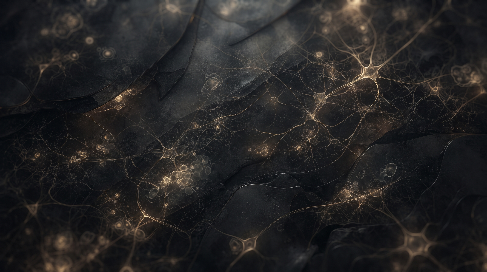
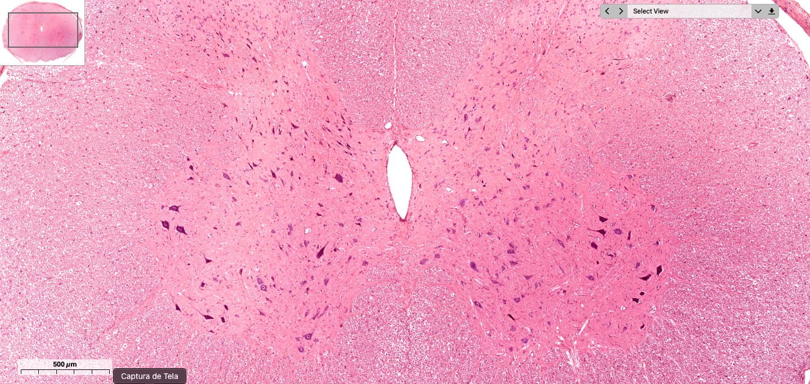

Atlas Integrado de Ciências Morfológicas
O mais completo acervo digital focado no ciclo básico da Medicina. Explore estruturas microscópicas e anatômicas em altíssima definição com navegação piramidal profunda.

Medula Espinal
Substância cinzenta central em formato de H e substância branca periférica com motoneurônios.
Histologia
Estudo da organização tecidual e celular em lâminas virtuais de alta definição com diferentes colorações histológicas.
Anatomia
Estudo topográfico da arquitetura corporal e acidentes anatômicos em peças e cortes cadavéricos reais (em breve).
Patologia
Análise das alterações morfológicas teciduais, processos inflamatórios, mecanismos de lesão e neoplasias (em breve).
Parasitologia
Identificação morfológica e características estruturais de protozoários e helmintos de interesse médico (em breve).
Microbiologia
Análise morfotintorial e identificação de arranjos bacterianos e estruturas fúngicas em lâminas (em breve).
Um compêndio morfológico construído por estudantes para estudantes.
O Palas Atlas nasceu da necessidade de integrar a teoria morfológica à rotina prática laboratorial. Unimos a precisão científica dos principais manuais à curadoria acadêmica de estudantes, monitores e professores de Medicina.
Conhecer a história, proposta e corpo editorial →